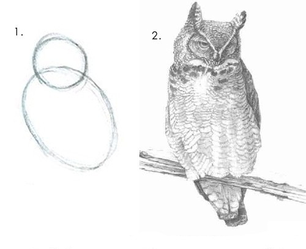
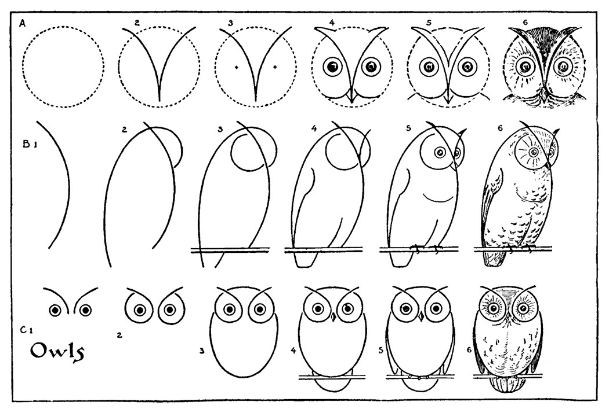

The unknown thing to be known appeared to me as some stretch of earth or hard marl, resisting penetration… the sea advances insensibly in silence, nothing seems to happen, nothing moves, the water is so far off you hardly hear it… yet it finally surrounds the resistant substance.
Two old engineers were talking of their lives and boasting of their greatest projects. One of the engineers explained how he had designed the largest bridge ever made.
We built it across a river gorge,
he told his friend. It was wide and deep. We spent two years studying the land, and choosing designs. Then we hired the best people and designed the bridge, which took another five years. We contracted the largest engineering firms to build the structures, the towers, the tollbooths, and the roads that would connect the bridge to the main highways. Under the road level we had trains, and a special path for cyclists. That bridge represented years of my life.
The second man reflected for a while, then spoke. One evening me and a friend threw a rope across a gorge,
he said. Just a rope, tied to two trees. There were two villages, one at each side. At first, people pulled packages across that rope with a pulley and string. Then someone pulled across a second rope, and built a foot walk. It was dangerous, but the kids loved it. A group of men then rebuilt that, made it solid, and women started to cross, everyday, with their produce. A market grew up on one side of the bridge, and slowly that became a large town, since there was a lot of space for houses. The rope bridge got replaced with a wooden bridge, to allow horses and carts to cross. Then the town built a real stone bridge, with metal beams. Later, they replaced the stone part with steel, and today there's a suspension bridge standing in that same spot.
The first engineer was silent. Funny thing,
he said, my bridge was demolished not long after it was built. Turns out it was built in the wrong place and no-one wanted to use it. Some bastard had thrown a rope across the gorge, a few miles further downstream, and that's where everyone went.


The best way I know to eliminate errors is to imagine that there is a curious child sitting next to us. Every time we write an assertion, the child asks: Why?
Procrustes had a stronghold on Mount Korydallos at Erineus, on the sacred way between Athens and Eleusis.
There he had a bed, in which he invited every passer-by to spend the night, and where he set to work on them with his smith's hammer, to stretch them to fit. In later tellings, if the guest proved too tall, Procrustes would amputate the excess length; if the guest was too short Procrustes would stretch them until they died; nobody ever fit the bed exactly.